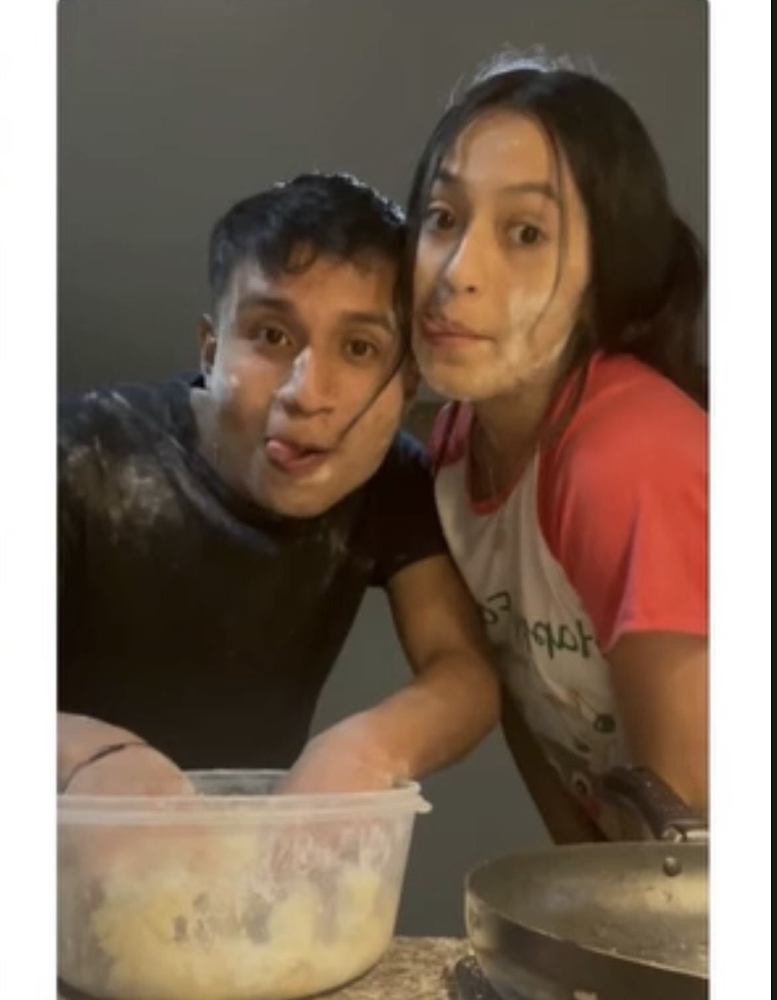
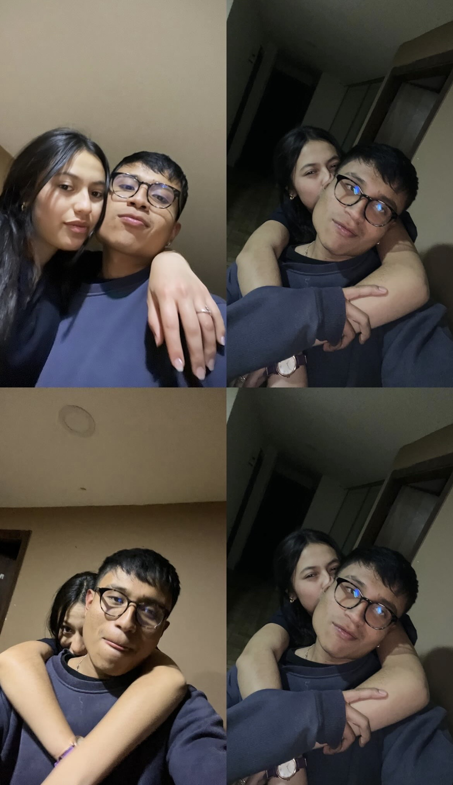
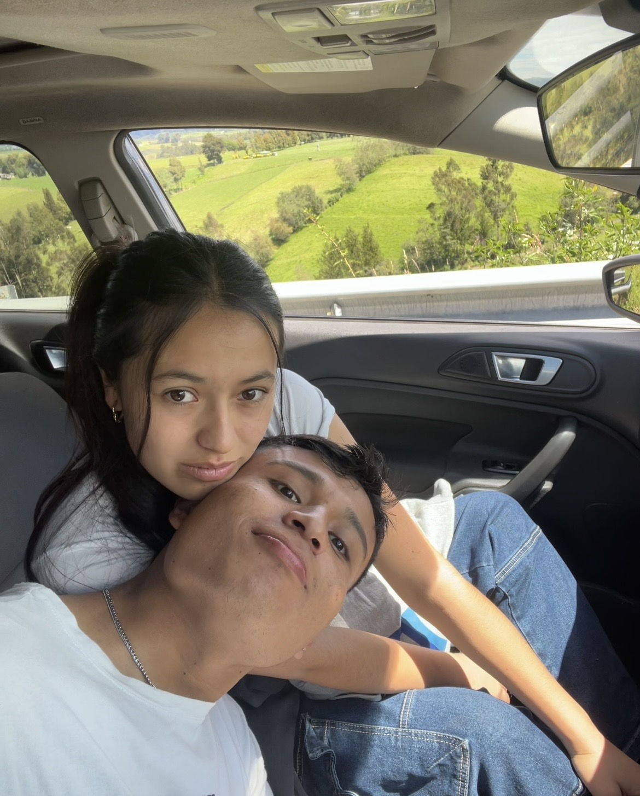
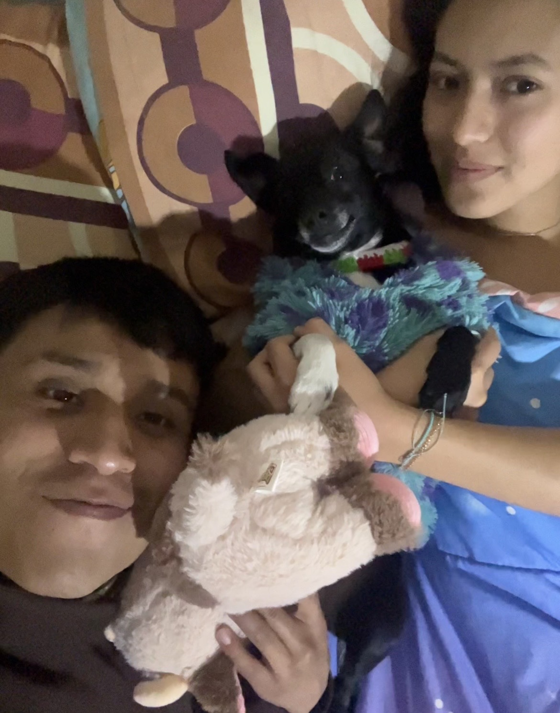
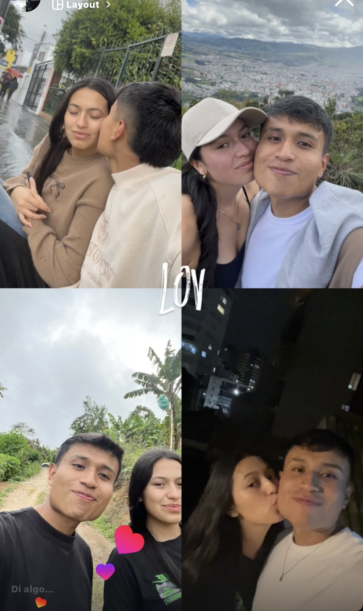
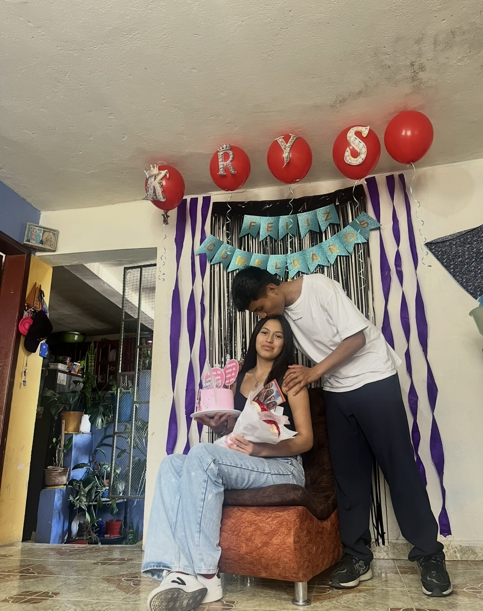
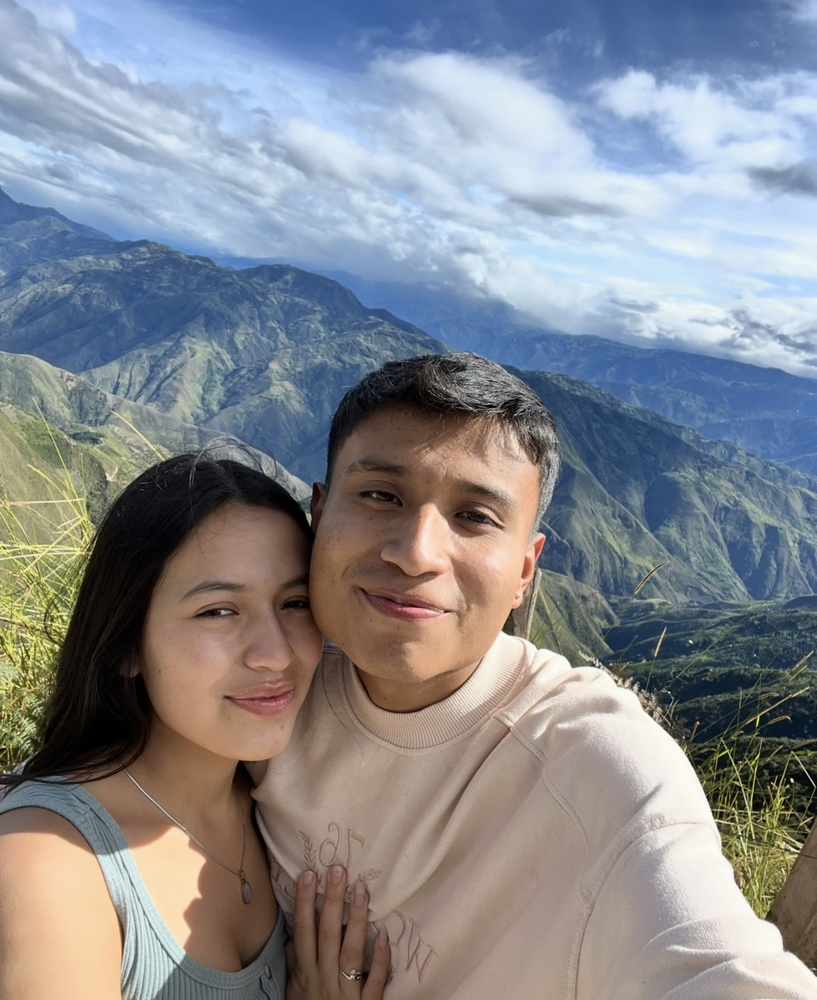
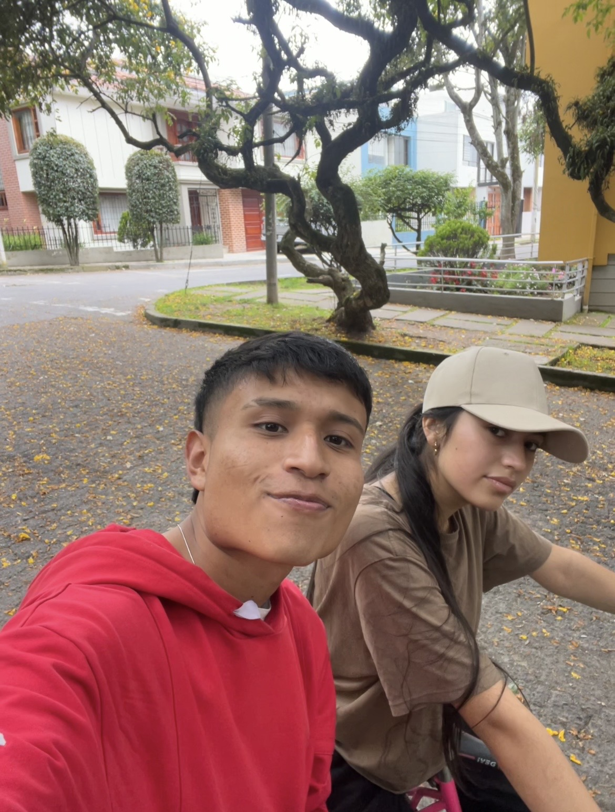

Donde te encontré
Septiembre - Octubre 2024: El mes donde te conocí y decidí prestar mi atención a quien me daría experiencias únicas.
Noviembre - Diciembre: Mi diciembre fue feliz por el simple hecho de que estabas tú. La natilla y las reuniones familiares tenían un color distinto.
Enero - Febrero 2025: Aprendí a quererte en la distancia. Ese 19 de enero en San Sebastián, conociendo a tu familia, fue una bendición de Dios. Me hiciste sentir parte de los tuyos.



Sentirnos hogar
Marzo - Abril: Despertar contigo era mi paz. Quizá fuimos inmaduros, pero nos dejábamos llevar por el amor.
Mayo - Agosto: Apareció el miedo a la distancia. Tuvimos nuestro primer viaje (grabado en mi corazón), pero también llegó el primer vacío cuando decidiste tomar distancia. Fue una experiencia para crecer.
Septiembre - Octubre: A pesar de los días malos, le pedía a Dios que no te alejara. Me sentía vacío si no estabas, y cada día decidíamos seguir eligiéndonos.




Siempre eres tú
Noviembre - Diciembre 2025: La etapa más difícil. Me dolió soltarte, no dormía, extrañaba hasta los ladridos de la Molly. Aprendí que para respetarte, primero debía elegirme a mí.
Enero - Marzo 2026: Aprendí a estar sin ti, pero jamás a olvidarte. Decidí buscarte porque nada se compara con la tranquilidad que me das. Aquí estamos, con inseguridades, pero agradecido con Dios por permitirme compartir mi vida contigo.
